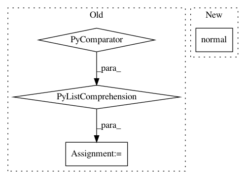

071b27b1ffc1c38e84f64fafcc126fafa54369a1,cistar-dev/cistar/envs/lane_changing.py,SimpleLaneChangingAccelerationEnvironment,getState,#SimpleLaneChangingAccelerationEnvironment#,68
Before Change
sorted_ids = np.array(self.ids)[sorted_indx]
sorted_rl_cars = np.array([0] * len(sorted_ids))
sorted_rl_cars[:len(self.rl_ids)] = np.sort([self.vehicles[veh_id]["absolute_position"]
for veh_id in self.rl_ids])
state = np.array([[self.vehicles[veh_id]["speed"],
self.vehicles[veh_id]["lane"],
self.vehicles[veh_id]["absolute_position"]] for veh_id in sorted_ids]).T
After Change
sorted_indx = np.argsort([self.vehicles[veh_id]["absolute_position"] for veh_id in self.ids])
sorted_ids = np.array(self.ids)[sorted_indx]
return np.array([[self.vehicles[veh_id]["speed"] + normal(0, kwargs["observation_vel_std"]),
self.vehicles[veh_id]["absolute_position"] + normal(0, kwargs["observation_pos_std"]),
self.vehicles[veh_id]["lane"]] for veh_id in sorted_ids]).T
In pattern: SUPERPATTERN
Frequency: 3
Non-data size: 4
Instances
Project Name: flow-project/flow
Commit Name: 071b27b1ffc1c38e84f64fafcc126fafa54369a1
Time: 2017-07-05
Author: akreidieh@gmail.com
File Name: cistar-dev/cistar/envs/lane_changing.py
Class Name: SimpleLaneChangingAccelerationEnvironment
Method Name: getState
Project Name: freelunchtheorem/Conditional_Density_Estimation
Commit Name: 4f9f28da19466e18165feb5a3dab0e82f686b926
Time: 2019-01-13
Author: jonas.rothfuss@gmx.de
File Name: tests/unittests_estimators.py
Class Name: TestConditionalDensityEstimators_2d_gaussian
Method Name: test_LSCD_with_2d_gaussian
Project Name: freelunchtheorem/Conditional_Density_Estimation
Commit Name: 6fbef6a3631d94991ab02a9f7411e3b6fd954dfc
Time: 2019-01-12
Author: jonas.rothfuss@gmx.de
File Name: tests/unittests_estimators.py
Class Name: TestConditionalDensityEstimators_2d_gaussian
Method Name: test_NKDE_with_2d_gaussian